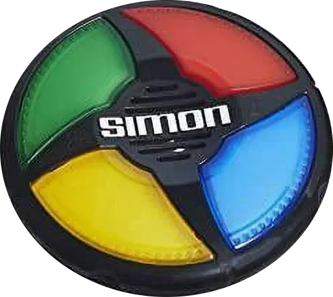

Intro
The Simon Game is an old Hasbro video game. It consisted of four colored buttons (red, green, blue, and yellow) that each play a unique tone. Players must repeat an increasingly long string of tones that Simon creates. If a player gets the order wrong, they lose
This is the documentation on how we created our version of the game. The game itself can be found here.
The complete final "File Package" can be downloaded here.
How to Play
- - The game shows the first color in a sequence. The user clicks on the button with the same color.
- - The game shows the next color, and the user has to remember the color sequence (first color, second color) and so on and so forth.
- - The game continues to build the color sequence and the player has to remember ALL of the colors in order.
- - If the player messes up the sequence, then the game ends.
Basic Setup
We're going to be using HTML, CSS, JavaScript and jQuery to create our game. So the fist thing we need to do is:
- 1.) Create our basic HTML file.
- 2.) Create our CSS file and link it to our HTML file.
- 3.) Create our JavaScript file and link it to our HTML file.
- 4.) Install the latest CDN version of jQuery.
- 5.) We're also using a custom font for our game text which will go in the <head> section of our HTML file. The link is:
- <link href="https://fonts.googleapis.com/css?family=Press+Start+2P" rel="stylesheet">
HTML Setup
As we've stated, our HTML file needs to included links for our CSS, JavaScript, and jQuery files. The CSS link will go in the <head> section of the page. The JavaScript and Jquery links will go at the very bottom of or HTML page, right before the closing <body> tag.
Remember, the jQuery link must be before the JavaScript link so that the jQuery will load first.
The actual HTML coding for the game is pretty simple and straight forward. We've got a couple of <h1> elements, a container <div> to hold our "buttons", and some <div>'s for the actual buttons.
- HTML
- <h1 id="level-title">Press Any Key to Start</h1>
-
- <div class="cont">
- <div class="row">
- <div type="button" id="green" class="btn green"></div>
- <div type="button" id="red" class="btn red"></div>
- </div>
- <div class="row">
- <div type="button" id="yellow" class="btn yellow"></div>
- <div type="button" id="blue" class="btn blue"></div>
- </div>
- </div>
-
- <h1 id="restart-title">Press any key to Start Over</h1>
Notice the id and class assignments. These will be used by the CSS for styling, and by the JavaScript and jQuery for the game functionality.
And that's it. This is all the HTML we are going to need to make our game.
CSS Setup
We are not going to discuss the CSS file in any great detail, because this project contains pretty basic styling. That being said, the CSS file is included in the "File Package" that can be downloaded in it's entirety.
JavaScript/jQuery Setup
- the Variables -
And now for the interesting part, the JavaScript and jQuery code. The first thing we're going to do is set up our variables:
- JavaScript / jQuery
- let buttonColors = ["red", "blue", "green", "yellow"];
- let gamePattern = [];
- let userClickedPattern = [];
- let level = 0;
- let gameOver = 0;
- $('#restart-title').hide();
- - buttonColors - is used to identify which color is is generated by the random color generator. This is the games AI that determines the color sequences. It is also used to identify which button the user pressed in response to the the game flow.
-
- - gamePattern - is the array of colors that is built by the random color generator. It starts as an empty array and grows by one for every level that the game plays. This is reset to an empty array on game restart.
-
- - userClickedPattern - is the array of colors that is built by the user response inputs, as they play the game. Like - gamePattern, it starts as an empty array and grows by one for every level that the game plays. This is also reset to an empty array on game restart.
-
- - level - is simply used to display the current game level. Every time the user inputs a correct sequence, the level increases by one. The level will reset on game restart.
-
- - gameOver - is used to determine if a key press has been utilized to start the game, and to determine if the game is still running. If the player inputs an incorrect sequence, the game will end. This variable controls this functionality.
-
- - $('#restart-title').hide(); - this jQuery code controls the last <h1> element, which only displays when a game ends. It's only purpose is to instruct the player to "Press any key to restart the game". So when a game ends, we will "show" this element, and re-hide it if the game restarts.
- the event functions -
Next we're going to add our event functions.
The first event we want to create is the keypress event. This will be used to start a new game, or to restart a game.
- JavaScript / jQuery
- $(document).keypress( function() {
- if (!level) {
- level = 1;
- nextSequence();
- } else {
- }
- });
This is pretty straight forward code here:
- - First we are add a keypress event on the entire webpage (document).
- - Initially, AND when we Restart a game, our level variable is set to 0. So when a keypress event is detected, the first part of the if statement will execute. This will set level to 1, and generate our first random color with (nextSequence()). So what this is really checking for is, "is this the first run of the game", because after the first run, level will be set to 1, or greater, and this part of the if statement will no longer run.
- - The only other time we utilize a keypress event is if the game ends, and the user has pressed a key to "Restart the Game". In this case, the gameOver variable has a value of 1, so if a keypress event is detected, the startOver() function will run and reset the game variables for a new game.
This code has another effect here. The game will ignore any keypress events, either after the game has started, or before the game has ended. This halts either of the conditions from running in the middle of the game.
The next event we want to listen for is a click event which will allow the player to click on the buttons when playing the game. Because of the HTML id, and class assignments, we refer to the buttons by their color name, Red, Blue, Green, and Yellow.